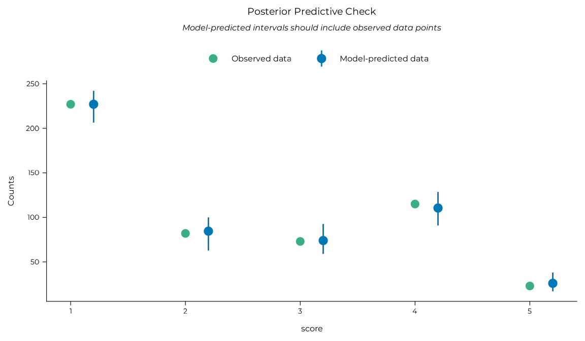
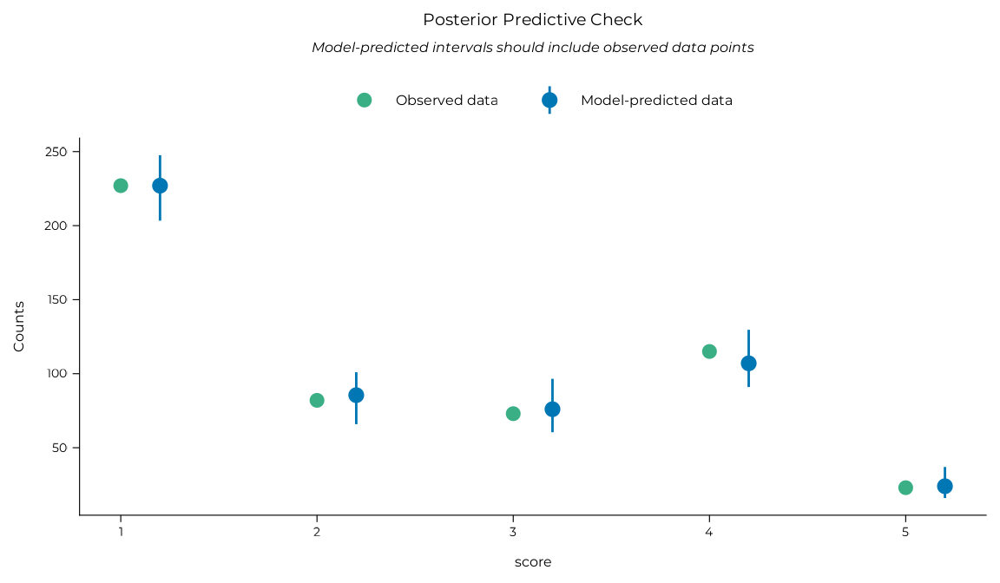
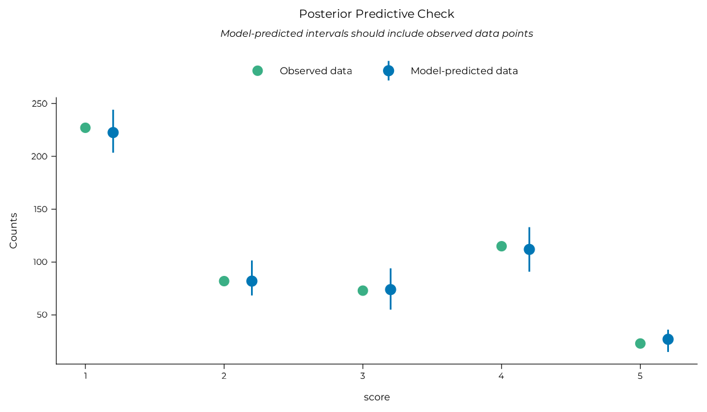
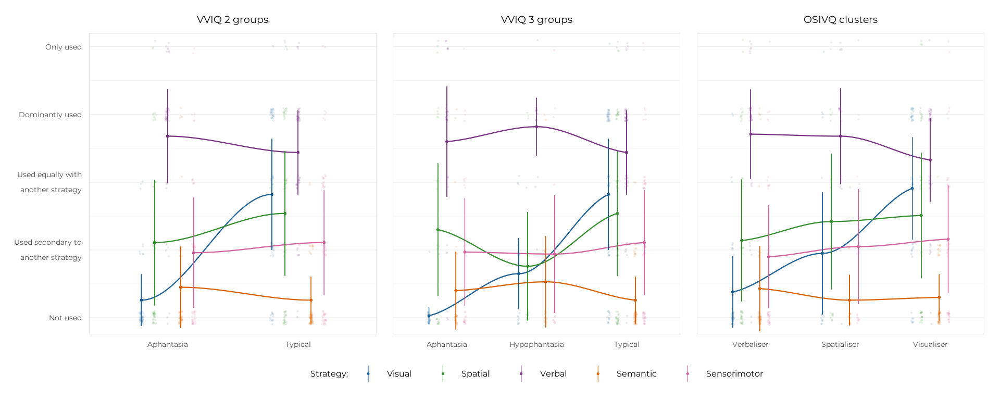
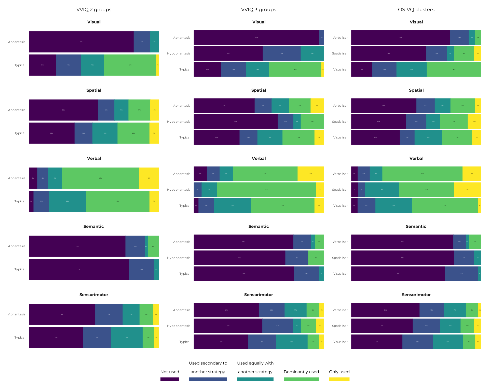

This vignette contains a full breakdown of the analyses of the self-reported (using Likert scales) mental strategies that participants used to solve the reasoning problems. Only Bayesian analyses were reported in the manuscript for brevity, but equivalent frequentist analyses were also conducted to test the convergence of the two approaches on similar results. They are reported in this vignette alongside the Bayesian analyses for completeness.
library(aphantasiaReasoningViie)
#> Welcome to aphantasiaReasoningViie.
#> See https://osf.io/hfbcp/ for the associated study.Data preparation
First, let’s get the clean, analysis-ready and clustered data (see
vignette("preparing_data") and
vignette("osivq_clusters") for details).
df_survey <- get_clustered_data("survey") By default, the df_survey data frame has one variable
(one column) containing the responses of each participant for each
strategy question (Visual, Spatial, Verbal, Semantic, Sensorimotor). We
needed to have all of these five modalities in a single “strategy”
variable along with the associated “score” variable for modelling, so we
gathered these five columns into two long columns by “pivoting” the
strategies data in a long format (reducing the number of columns and
increasing the number of rows). This operation is performed by the
pivot_strategies_longer() function.
df_strats_long <- pivot_strategies_longer(df_survey, ordered = TRUE)
dplyr::glimpse(df_strats_long)
#> Rows: 520
#> Columns: 11
#> $ id <fct> acdn247721443631359lzxb, acdn247721443631359lzxb, acdn2…
#> $ language <fct> fr, fr, fr, fr, fr, fr, fr, fr, fr, fr, fr, fr, fr, fr,…
#> $ age <int> 24, 24, 24, 24, 24, 26, 26, 26, 26, 26, 23, 23, 23, 23,…
#> $ gender <fct> f, f, f, f, f, f, f, f, f, f, m, m, m, m, m, f, f, f, f…
#> $ group_4 <fct> Typical, Typical, Typical, Typical, Typical, Aphantasia…
#> $ group_2 <fct> Typical, Typical, Typical, Typical, Typical, Aphantasia…
#> $ group_3 <fct> Typical, Typical, Typical, Typical, Typical, Aphantasia…
#> $ strategy_group <fct> No_visual_strategy, No_visual_strategy, No_visual_strat…
#> $ cluster <fct> Visualiser, Visualiser, Visualiser, Visualiser, Visuali…
#> $ strategy <fct> Visual, Verbal, Spatial, Semantic, Sensorimotor, Visual…
#> $ score <ord> no_use, mainly_this_strat, secondary_strat, no_use, onl…Method
Ordinal cumulative link regression models were fitted, using the brms package for Bayesian models (Bürkner, 2017) or the ordinal package (Christensen, 2023) for frequentist models, to predict the score (on a question about the use of a given strategy) with a grouping variable (VVIQ groups, OSIVQ clusters), Strategy (visual, verbal, spatial, semantic or sensorimotor) and their two-way interaction as fixed categorical predictors. We planned to analyse the contrasts between groups for each strategy separately.
Let’s break this down.
Grouping variables
We used several grouping variables to classify participants, all of
which are in the df_strats_long data frame:
group_4is the 4-group VVIQ classification with an “aphantasia” group (VVIQ = 16), “hypophantasia” group (VVIQ [17, 32]), “typical” group (VVIQ [33, 74]), and “hyperphantasia” group (VVIQ [75, 80]). It was not used in the analyses because the hyperphantasia group was too small (N = 4).group_3is the same asgroup, but with the hyperphantasia group merged with the typical group. It is referred to as “VVIQ 3 groups” in the manuscript results.group_2is the binary classification often used in aphantasia literature that additionally merges the hypophantasia group with the aphantasia group. It is refereed to as “VVIQ 2 groups” in the manuscript results.clusteris the cognitive style classification obtained from clustering OSIVQ scores. It contains three groups: “Visualiser”, “Spatialiser”, and “Verbaliser”. It is referred to as “OSIVQ 3 clusters” in the manuscript results.
The same modelling pipeline was therefore applied three times, once for each of the last three grouping variables.
Bayesian models
Bayesian models were fitted using the brms::brm()
function through a custom wrapper, fit_brms_model(), that
sets several default options for us. 24000 post-warmup iterations were
spread across all available CPU for parallel processing1, with 2000 additional
warmup iterations per chain. A fixed seed was used for reproducibility.
The CmdStanR back-end was
used for better performance. CmdStanR needs a special installation
command which is provided in the next chunk if needed. Since the models
were very simple and easy to fit, default priors were used. To avoid
having to refit the models each time the vignette is built and improve
reproducibility, fitted models are saved in the
vignettes/models folder and loaded in the R chunks.
After model fit, we checked for potential singularity issues and
model performance using the get_singularity() and
get_performance() functions created for the occasion (which
are convenient wrappers around the performance package).
Posterior predictive checks were also performed with the
performance::check_predictions() function to check that the
models were able to reproduce the data well.
Finally, we tested our hypotheses with marginal contrasts. This task
was performed with functions from the marginaleffects package.
We used the marginaleffects::avg_comparisons() function to
compute contrasts and a custom report_rope() wrapper
(around marginaleffects::posterior_draws(),
bayestestR::rope_range() and
bayestestR::p_direction()) to summarise their posterior
distributions. We computed the probability of direction (PD) of the
contrasts and the proportions of their posterior distributions below,
inside or above a region of practical equivalence to the null (ROPE)
(see Makowski et al., 2019). We computed
strategy use contrasts between groups for each strategy, contrasts
between strategies within each group, and interaction contrasts
(differences in strategy contrasts between groups).
The setup of the CmdStanR back-end and marginaleffects options is done in the chunk below.
Frequentist models
Frequentist ordinal models were fitted using the
fit_clm() function, which is a wrapper around the
ordinal::clm() function that simply sets a probit link by
default. After model fit, we checked for potential singularity issues
and model performance using the get_singularity() and
get_performance() functions created for the occasion (which
are convenient wrappers around the performance package).
Finally, we tested our hypotheses with marginal contrasts. This task
was performed with the report_contrast() function, which is
a wrapper around several functions from the emmeans package2. We used
it to compute strategy use contrasts between groups for each strategy,
contrasts between strategies within each group, and interaction
contrasts (differences in strategy contrasts between groups).
Here we go!
Results
VVIQ 2 groups
Bayesian
mb_strats_vviq_2 <-
fit_brms_model(
formula = score ~ group_2 * strategy,
data = df_strats_long,
family = brms::cumulative(link = "probit"),
file = "models/m_strat_vviq_2.rds"
)
# Singularity check
mb_strats_vviq_2 |> get_singularity()
# Model performance indices
mb_strats_vviq_2 |>
get_performance(metrics = c("WAIC", "R2", "RMSE")) |>
knitr::kable(align = "c")| WAIC | R2 |
|---|---|
| 1269.7 | 0.353 |
# Posterior predictive check (best model performance indicator)
mb_strats_vviq_2 |>
performance::check_predictions() |> plot() + theme_pdf(base_size = 12)
# Group contrasts by strategy
mb_strats_vviq_2 |>
marginaleffects::avg_comparisons(
variables = list("group_2" = "pairwise"), by = "strategy",
type = "link",
draw_ids = draws
) |>
report_rope(strategy, contrast) |> knitr::kable()| strategy | contrast | Estimate | 95% CI | PD | Below ROPE | Inside ROPE | Above ROPE |
|---|---|---|---|---|---|---|---|
| Visual | Typical - Aphantasia | 1.704 | [1.204, 2.206] | 1.000 | 0.000 | 0.000 | 1.000 |
| Spatial | Typical - Aphantasia | 0.402 | [-0.035, 0.817] | 0.965 | 0.016 | 0.068 | 0.917 |
| Verbal | Typical - Aphantasia | -0.271 | [-0.687, 0.156] | 0.896 | 0.776 | 0.182 | 0.042 |
| Semantic | Typical - Aphantasia | -0.235 | [-0.744, 0.277] | 0.807 | 0.698 | 0.194 | 0.108 |
| Sensorimotor | Typical - Aphantasia | 0.126 | [-0.291, 0.567] | 0.718 | 0.148 | 0.308 | 0.543 |
# Strategy contrasts within groups
mb_strats_vviq_2 |>
marginaleffects::avg_comparisons(
variables = list("strategy" = "pairwise"), by = "group_2",
type = "link",
draw_ids = draws
) |>
report_rope(group_2, contrast) |> knitr::kable()| group_2 | contrast | Estimate | 95% CI | PD | Below ROPE | Inside ROPE | Above ROPE |
|---|---|---|---|---|---|---|---|
| Aphantasia | Semantic - Spatial | -0.774 | [-1.252, -0.309] | 1.000 | 0.998 | 0.002 | 0.000 |
| Aphantasia | Semantic - Verbal | -2.153 | [-2.65, -1.639] | 1.000 | 1.000 | 0.000 | 0.000 |
| Aphantasia | Semantic - Visual | 0.307 | [-0.233, 0.906] | 0.861 | 0.075 | 0.158 | 0.767 |
| Aphantasia | Sensorimotor - Semantic | 0.650 | [0.183, 1.107] | 0.997 | 0.002 | 0.010 | 0.989 |
| Aphantasia | Sensorimotor - Spatial | -0.123 | [-0.574, 0.333] | 0.692 | 0.537 | 0.290 | 0.172 |
| Aphantasia | Sensorimotor - Verbal | -1.500 | [-1.957, -1.047] | 1.000 | 1.000 | 0.000 | 0.000 |
| Aphantasia | Sensorimotor - Visual | 0.953 | [0.452, 1.507] | 1.000 | 0.000 | 0.000 | 1.000 |
| Aphantasia | Spatial - Visual | 1.082 | [0.559, 1.603] | 1.000 | 0.000 | 0.000 | 1.000 |
| Aphantasia | Verbal - Spatial | 1.372 | [0.938, 1.848] | 1.000 | 0.000 | 0.000 | 1.000 |
| Aphantasia | Verbal - Visual | 2.459 | [1.933, 2.999] | 1.000 | 0.000 | 0.000 | 1.000 |
| Typical | Semantic - Spatial | -1.406 | [-1.856, -0.97] | 1.000 | 1.000 | 0.000 | 0.000 |
| Typical | Semantic - Verbal | -2.115 | [-2.592, -1.636] | 1.000 | 1.000 | 0.000 | 0.000 |
| Typical | Semantic - Visual | -1.627 | [-2.066, -1.184] | 1.000 | 1.000 | 0.000 | 0.000 |
| Typical | Sensorimotor - Semantic | 1.016 | [0.568, 1.459] | 1.000 | 0.000 | 0.000 | 1.000 |
| Typical | Sensorimotor - Spatial | -0.385 | [-0.795, 0.013] | 0.970 | 0.924 | 0.068 | 0.008 |
| Typical | Sensorimotor - Verbal | -1.097 | [-1.515, -0.683] | 1.000 | 1.000 | 0.000 | 0.000 |
| Typical | Sensorimotor - Visual | -0.610 | [-0.989, -0.223] | 0.999 | 0.995 | 0.005 | 0.000 |
| Typical | Spatial - Visual | -0.217 | [-0.602, 0.162] | 0.871 | 0.722 | 0.232 | 0.046 |
| Typical | Verbal - Spatial | 0.710 | [0.321, 1.122] | 1.000 | 0.000 | 0.001 | 0.999 |
| Typical | Verbal - Visual | 0.492 | [0.103, 0.883] | 0.993 | 0.001 | 0.023 | 0.976 |
# Interaction contrasts
mb_strats_vviq_2 |>
marginaleffects::avg_comparisons(
variables = list("strategy" = "pairwise"),
by = "group_2",
hypothesis = ~revpairwise, # for the interaction
type = "link",
draw_ids = draws
) |>
report_rope(hypothesis) |> knitr::kable()| Category contrast | Grouping contrast | Estimate | 95% CI | PD | Below ROPE | Inside ROPE | Above ROPE |
|---|---|---|---|---|---|---|---|
| Semantic - Spatial | Aphantasia - Typical | 0.636 | [-0.019, 1.294] | 0.970 | 0.016 | 0.041 | 0.943 |
| Semantic - Verbal | Aphantasia - Typical | -0.047 | [-0.721, 0.687] | 0.552 | 0.428 | 0.230 | 0.342 |
| Semantic - Visual | Aphantasia - Typical | 1.932 | [1.232, 2.671] | 1.000 | 0.000 | 0.000 | 1.000 |
| Sensorimotor - Semantic | Aphantasia - Typical | -0.359 | [-1.044, 0.271] | 0.865 | 0.782 | 0.138 | 0.080 |
| Sensorimotor - Spatial | Aphantasia - Typical | 0.272 | [-0.361, 0.854] | 0.802 | 0.129 | 0.174 | 0.697 |
| Sensorimotor - Verbal | Aphantasia - Typical | -0.398 | [-1.042, 0.214] | 0.896 | 0.832 | 0.108 | 0.061 |
| Sensorimotor - Visual | Aphantasia - Typical | 1.570 | [0.901, 2.259] | 1.000 | 0.000 | 0.000 | 1.000 |
| Spatial - Visual | Aphantasia - Typical | 1.296 | [0.676, 1.995] | 1.000 | 0.000 | 0.000 | 1.000 |
| Verbal - Spatial | Aphantasia - Typical | 0.666 | [0.07, 1.292] | 0.983 | 0.009 | 0.022 | 0.969 |
| Verbal - Visual | Aphantasia - Typical | 1.958 | [1.341, 2.664] | 1.000 | 0.000 | 0.000 | 1.000 |
Frequentist
mf_strats_vviq_2 <- fit_clm(score ~ group_2 * strategy, df_strats_long)
# Singularity
mf_strats_vviq_2 |> get_singularity()
# Performance
mf_strats_vviq_2 |> get_performance() |> knitr::kable(align = "c")| AIC | BIC | RMSE |
|---|---|---|
| 1268.9 | 1324.2 | 2.400 |
# Group contrasts by strategy
mf_strats_vviq_2 |> report_contrast(~ group_2 | strategy) |> knitr::kable()| Contrast | Strategy | Difference | 95% CI | p.value |
|---|---|---|---|---|
| Typical - Aphantasia | Visual | 1.689 | [1.2, 2.18] | 0.000 |
| Typical - Aphantasia | Spatial | 0.397 | [-0.03, 0.82] | 0.068 |
| Typical - Aphantasia | Verbal | -0.267 | [-0.68, 0.14] | 0.203 |
| Typical - Aphantasia | Semantic | -0.229 | [-0.74, 0.28] | 0.379 |
| Typical - Aphantasia | Sensorimotor | 0.137 | [-0.29, 0.57] | 0.531 |
# Strategy contrasts within groups
mf_strats_vviq_2 |> report_contrast(~ strategy | group_2) |> knitr::kable()| Contrast | group_2 | Difference | 95% CI | p.value |
|---|---|---|---|---|
| Spatial - Visual | Aphantasia | 1.078 | [0.36, 1.8] | 0.000 |
| Verbal - Visual | Aphantasia | 2.454 | [1.73, 3.18] | 0.000 |
| Verbal - Spatial | Aphantasia | 1.376 | [0.75, 2] | 0.000 |
| Semantic - Visual | Aphantasia | 0.302 | [-0.46, 1.06] | 0.814 |
| Semantic - Spatial | Aphantasia | -0.775 | [-1.46, -0.09] | 0.017 |
| Semantic - Verbal | Aphantasia | -2.152 | [-2.84, -1.47] | 0.000 |
| Sensorimotor - Visual | Aphantasia | 0.953 | [0.24, 1.67] | 0.003 |
| Sensorimotor - Spatial | Aphantasia | -0.125 | [-0.76, 0.51] | 0.983 |
| Sensorimotor - Verbal | Aphantasia | -1.501 | [-2.13, -0.87] | 0.000 |
| Sensorimotor - Semantic | Aphantasia | 0.651 | [-0.03, 1.33] | 0.069 |
| Spatial - Visual | Typical | -0.214 | [-0.76, 0.33] | 0.822 |
| Verbal - Visual | Typical | 0.498 | [-0.04, 1.04] | 0.088 |
| Verbal - Spatial | Typical | 0.713 | [0.17, 1.26] | 0.004 |
| Semantic - Visual | Typical | -1.616 | [-2.25, -0.98] | 0.000 |
| Semantic - Spatial | Typical | -1.401 | [-2.03, -0.77] | 0.000 |
| Semantic - Verbal | Typical | -2.114 | [-2.75, -1.48] | 0.000 |
| Sensorimotor - Visual | Typical | -0.599 | [-1.15, -0.05] | 0.026 |
| Sensorimotor - Spatial | Typical | -0.385 | [-0.94, 0.17] | 0.323 |
| Sensorimotor - Verbal | Typical | -1.097 | [-1.65, -0.54] | 0.000 |
| Sensorimotor - Semantic | Typical | 1.017 | [0.38, 1.65] | 0.000 |
# Interaction contrasts
mf_strats_vviq_2 |> report_contrast(~ group_2 * strategy, interaction = TRUE) |>
knitr::kable()| group_2_revpairwise | strategy_revpairwise | Difference | 95% CI | p.value |
|---|---|---|---|---|
| Typical - Aphantasia | Spatial - Visual | -1.292 | [-1.94, -0.64] | 0.000 |
| Typical - Aphantasia | Verbal - Visual | -1.956 | [-2.6, -1.31] | 0.000 |
| Typical - Aphantasia | Verbal - Spatial | -0.664 | [-1.26, -0.07] | 0.028 |
| Typical - Aphantasia | Semantic - Visual | -1.918 | [-2.63, -1.21] | 0.000 |
| Typical - Aphantasia | Semantic - Spatial | -0.626 | [-1.29, 0.04] | 0.065 |
| Typical - Aphantasia | Semantic - Verbal | 0.038 | [-0.62, 0.69] | 0.910 |
| Typical - Aphantasia | Sensorimotor - Visual | -1.552 | [-2.2, -0.9] | 0.000 |
| Typical - Aphantasia | Sensorimotor - Spatial | -0.260 | [-0.86, 0.34] | 0.399 |
| Typical - Aphantasia | Sensorimotor - Verbal | 0.404 | [-0.19, 1] | 0.182 |
| Typical - Aphantasia | Sensorimotor - Semantic | 0.366 | [-0.3, 1.03] | 0.281 |
VVIQ 3 groups
Bayesian
mb_strats_vviq_3 <-
fit_brms_model(
formula = score ~ group_3 * strategy,
data = df_strats_long,
family = brms::cumulative(link = "probit"),
file = "models/m_strat_vviq_3.rds"
)
# Singularity check
mb_strats_vviq_3 |> get_singularity()
# Model performance indices
mb_strats_vviq_3 |>
get_performance(metrics = c("WAIC", "R2", "RMSE")) |>
knitr::kable(align = "c")| WAIC | R2 |
|---|---|
| 1266.0 | 0.362 |
# Posterior predictive check (best model performance indicator)
mb_strats_vviq_3 |>
performance::check_predictions() |> plot() + theme_pdf(base_size = 12)
# Group contrasts by strategy
mb_strats_vviq_3 |>
marginaleffects::avg_comparisons(
variables = list("group_3" = "pairwise"), by = "strategy",
type = "link",
draw_ids = draws
) |>
report_rope(strategy, contrast) |> knitr::kable()| strategy | contrast | Estimate | 95% CI | PD | Below ROPE | Inside ROPE | Above ROPE |
|---|---|---|---|---|---|---|---|
| Visual | Hypophantasia - Aphantasia | 1.711 | [0.692, 2.842] | 1.000 | 0.000 | 0.000 | 1.000 |
| Visual | Typical - Aphantasia | 2.778 | [1.881, 3.809] | 1.000 | 0.000 | 0.000 | 1.000 |
| Visual | Typical - Hypophantasia | 1.069 | [0.421, 1.689] | 0.999 | 0.000 | 0.002 | 0.998 |
| Spatial | Hypophantasia - Aphantasia | -0.603 | [-1.314, 0.071] | 0.961 | 0.931 | 0.048 | 0.020 |
| Spatial | Typical - Aphantasia | 0.189 | [-0.278, 0.69] | 0.790 | 0.120 | 0.234 | 0.646 |
| Spatial | Typical - Hypophantasia | 0.807 | [0.196, 1.485] | 0.995 | 0.002 | 0.010 | 0.989 |
| Verbal | Hypophantasia - Aphantasia | 0.091 | [-0.567, 0.709] | 0.609 | 0.278 | 0.232 | 0.490 |
| Verbal | Typical - Aphantasia | -0.235 | [-0.689, 0.243] | 0.839 | 0.719 | 0.200 | 0.080 |
| Verbal | Typical - Hypophantasia | -0.324 | [-0.893, 0.254] | 0.864 | 0.781 | 0.145 | 0.074 |
| Semantic | Hypophantasia - Aphantasia | 0.200 | [-0.597, 0.937] | 0.703 | 0.216 | 0.180 | 0.604 |
| Semantic | Typical - Aphantasia | -0.162 | [-0.754, 0.445] | 0.698 | 0.579 | 0.225 | 0.196 |
| Semantic | Typical - Hypophantasia | -0.361 | [-1.044, 0.417] | 0.843 | 0.762 | 0.136 | 0.102 |
| Sensorimotor | Hypophantasia - Aphantasia | -0.014 | [-0.715, 0.659] | 0.518 | 0.401 | 0.238 | 0.362 |
| Sensorimotor | Typical - Aphantasia | 0.136 | [-0.358, 0.616] | 0.703 | 0.175 | 0.268 | 0.556 |
| Sensorimotor | Typical - Hypophantasia | 0.148 | [-0.432, 0.75] | 0.685 | 0.203 | 0.236 | 0.561 |
# Strategy contrasts within groups
mb_strats_vviq_3 |>
marginaleffects::avg_comparisons(
variables = list("strategy" = "pairwise"), by = "group_3",
type = "link",
draw_ids = draws
) |>
report_rope(group_3, contrast) |> knitr::kable()| group_3 | contrast | Estimate | 95% CI | PD | Below ROPE | Inside ROPE | Above ROPE |
|---|---|---|---|---|---|---|---|
| Aphantasia | Semantic - Spatial | -1.072 | [-1.699, -0.451] | 1.000 | 0.999 | 0.001 | 0.000 |
| Aphantasia | Semantic - Verbal | -2.211 | [-2.84, -1.628] | 1.000 | 1.000 | 0.000 | 0.000 |
| Aphantasia | Semantic - Visual | 1.279 | [0.311, 2.464] | 0.998 | 0.002 | 0.003 | 0.996 |
| Aphantasia | Sensorimotor - Semantic | 0.736 | [0.105, 1.359] | 0.988 | 0.004 | 0.020 | 0.977 |
| Aphantasia | Sensorimotor - Spatial | -0.319 | [-0.887, 0.266] | 0.871 | 0.787 | 0.142 | 0.070 |
| Aphantasia | Sensorimotor - Verbal | -1.477 | [-2.044, -0.885] | 1.000 | 1.000 | 0.000 | 0.000 |
| Aphantasia | Sensorimotor - Visual | 2.036 | [1.071, 3.114] | 1.000 | 0.000 | 0.000 | 1.000 |
| Aphantasia | Spatial - Visual | 2.343 | [1.429, 3.462] | 1.000 | 0.000 | 0.000 | 1.000 |
| Aphantasia | Verbal - Spatial | 1.146 | [0.586, 1.692] | 1.000 | 0.000 | 0.000 | 1.000 |
| Aphantasia | Verbal - Visual | 3.492 | [2.579, 4.617] | 1.000 | 0.000 | 0.000 | 1.000 |
| Hypophantasia | Semantic - Spatial | -0.255 | [-1.123, 0.608] | 0.731 | 0.647 | 0.144 | 0.210 |
| Hypophantasia | Semantic - Verbal | -2.118 | [-2.927, -1.295] | 1.000 | 1.000 | 0.000 | 0.000 |
| Hypophantasia | Semantic - Visual | -0.230 | [-1.114, 0.609] | 0.709 | 0.626 | 0.153 | 0.220 |
| Hypophantasia | Sensorimotor - Semantic | 0.525 | [-0.28, 1.391] | 0.894 | 0.067 | 0.092 | 0.842 |
| Hypophantasia | Sensorimotor - Spatial | 0.272 | [-0.505, 1.076] | 0.750 | 0.180 | 0.157 | 0.663 |
| Hypophantasia | Sensorimotor - Verbal | -1.576 | [-2.34, -0.809] | 1.000 | 1.000 | 0.000 | 0.000 |
| Hypophantasia | Sensorimotor - Visual | 0.313 | [-0.504, 1.044] | 0.768 | 0.161 | 0.152 | 0.687 |
| Hypophantasia | Spatial - Visual | 0.040 | [-0.821, 0.832] | 0.546 | 0.371 | 0.186 | 0.443 |
| Hypophantasia | Verbal - Spatial | 1.844 | [1.058, 2.628] | 1.000 | 0.000 | 0.000 | 1.000 |
| Hypophantasia | Verbal - Visual | 1.875 | [1.138, 2.626] | 1.000 | 0.000 | 0.000 | 1.000 |
| Typical | Semantic - Spatial | -1.417 | [-1.873, -0.977] | 1.000 | 1.000 | 0.000 | 0.000 |
| Typical | Semantic - Verbal | -2.139 | [-2.59, -1.673] | 1.000 | 1.000 | 0.000 | 0.000 |
| Typical | Semantic - Visual | -1.651 | [-2.11, -1.179] | 1.000 | 1.000 | 0.000 | 0.000 |
| Typical | Sensorimotor - Semantic | 1.034 | [0.6, 1.46] | 1.000 | 0.000 | 0.000 | 1.000 |
| Typical | Sensorimotor - Spatial | -0.387 | [-0.804, 0.028] | 0.970 | 0.914 | 0.078 | 0.009 |
| Typical | Sensorimotor - Verbal | -1.108 | [-1.479, -0.713] | 1.000 | 1.000 | 0.000 | 0.000 |
| Typical | Sensorimotor - Visual | -0.608 | [-1.011, -0.213] | 1.000 | 0.995 | 0.005 | 0.000 |
| Typical | Spatial - Visual | -0.228 | [-0.605, 0.174] | 0.876 | 0.741 | 0.209 | 0.051 |
| Typical | Verbal - Spatial | 0.722 | [0.332, 1.114] | 1.000 | 0.000 | 0.001 | 0.999 |
| Typical | Verbal - Visual | 0.489 | [0.11, 0.868] | 0.995 | 0.002 | 0.020 | 0.978 |
# Interaction contrasts
mb_strats_vviq_3 |>
marginaleffects::avg_comparisons(
variables = list("strategy" = "pairwise"),
by = "group_3",
hypothesis = ~revpairwise, # for the interaction
type = "link",
draw_ids = draws
) |>
report_rope(hypothesis) |> knitr::kable()| Category contrast | Grouping contrast | Estimate | 95% CI | PD | Below ROPE | Inside ROPE | Above ROPE |
|---|---|---|---|---|---|---|---|
| Semantic - Spatial | Aphantasia - Hypophantasia | -0.809 | [-1.811, 0.285] | 0.930 | 0.903 | 0.048 | 0.049 |
| Semantic - Verbal | Aphantasia - Hypophantasia | -0.123 | [-1.072, 0.885] | 0.594 | 0.524 | 0.148 | 0.328 |
| Semantic - Visual | Aphantasia - Hypophantasia | 1.513 | [0.203, 2.933] | 0.988 | 0.009 | 0.005 | 0.986 |
| Sensorimotor - Semantic | Aphantasia - Hypophantasia | 0.220 | [-0.862, 1.274] | 0.656 | 0.272 | 0.140 | 0.589 |
| Sensorimotor - Spatial | Aphantasia - Hypophantasia | -0.589 | [-1.577, 0.385] | 0.889 | 0.842 | 0.087 | 0.072 |
| Sensorimotor - Verbal | Aphantasia - Hypophantasia | 0.119 | [-0.868, 1.001] | 0.588 | 0.330 | 0.155 | 0.514 |
| Sensorimotor - Visual | Aphantasia - Hypophantasia | 1.731 | [0.511, 3.116] | 0.997 | 0.002 | 0.002 | 0.996 |
| Spatial - Visual | Aphantasia - Hypophantasia | 2.334 | [1.073, 3.659] | 1.000 | 0.000 | 0.000 | 0.999 |
| Verbal - Spatial | Aphantasia - Hypophantasia | -0.704 | [-1.641, 0.221] | 0.930 | 0.898 | 0.056 | 0.046 |
| Verbal - Visual | Aphantasia - Hypophantasia | 1.610 | [0.371, 2.946] | 0.996 | 0.001 | 0.006 | 0.993 |
| Semantic - Spatial | Aphantasia - Typical | 0.352 | [-0.412, 1.115] | 0.809 | 0.130 | 0.130 | 0.741 |
| Semantic - Verbal | Aphantasia - Typical | -0.070 | [-0.837, 0.686] | 0.570 | 0.472 | 0.198 | 0.329 |
| Semantic - Visual | Aphantasia - Typical | 2.939 | [1.832, 4.173] | 1.000 | 0.000 | 0.000 | 1.000 |
| Sensorimotor - Semantic | Aphantasia - Typical | -0.286 | [-1.038, 0.456] | 0.776 | 0.677 | 0.172 | 0.150 |
| Sensorimotor - Spatial | Aphantasia - Typical | 0.059 | [-0.647, 0.754] | 0.571 | 0.314 | 0.238 | 0.448 |
| Sensorimotor - Verbal | Aphantasia - Typical | -0.368 | [-1.026, 0.285] | 0.861 | 0.784 | 0.138 | 0.078 |
| Sensorimotor - Visual | Aphantasia - Typical | 2.658 | [1.578, 3.788] | 1.000 | 0.000 | 0.000 | 1.000 |
| Spatial - Visual | Aphantasia - Typical | 2.575 | [1.521, 3.756] | 1.000 | 0.000 | 0.000 | 1.000 |
| Verbal - Spatial | Aphantasia - Typical | 0.430 | [-0.228, 1.135] | 0.896 | 0.066 | 0.104 | 0.830 |
| Verbal - Visual | Aphantasia - Typical | 3.019 | [1.942, 4.198] | 1.000 | 0.000 | 0.000 | 1.000 |
| Semantic - Spatial | Hypophantasia - Typical | 1.160 | [0.184, 2.184] | 0.989 | 0.006 | 0.012 | 0.982 |
| Semantic - Verbal | Hypophantasia - Typical | 0.033 | [-0.937, 0.922] | 0.527 | 0.388 | 0.176 | 0.436 |
| Semantic - Visual | Hypophantasia - Typical | 1.411 | [0.431, 2.322] | 0.995 | 0.002 | 0.006 | 0.992 |
| Sensorimotor - Semantic | Hypophantasia - Typical | -0.514 | [-1.39, 0.447] | 0.862 | 0.806 | 0.094 | 0.100 |
| Sensorimotor - Spatial | Hypophantasia - Typical | 0.650 | [-0.241, 1.566] | 0.930 | 0.046 | 0.054 | 0.900 |
| Sensorimotor - Verbal | Hypophantasia - Typical | -0.478 | [-1.251, 0.37] | 0.868 | 0.817 | 0.100 | 0.083 |
| Sensorimotor - Visual | Hypophantasia - Typical | 0.908 | [0.045, 1.737] | 0.980 | 0.014 | 0.020 | 0.966 |
| Spatial - Visual | Hypophantasia - Typical | 0.275 | [-0.712, 1.116] | 0.703 | 0.229 | 0.142 | 0.629 |
| Verbal - Spatial | Hypophantasia - Typical | 1.121 | [0.287, 1.991] | 0.996 | 0.004 | 0.006 | 0.990 |
| Verbal - Visual | Hypophantasia - Typical | 1.388 | [0.499, 2.219] | 0.999 | 0.002 | 0.001 | 0.998 |
Frequentist
mf_strats_vviq_3 <- fit_clm(score ~ group_3 * strategy, df_strats_long)
mf_strats_vviq_3 |> get_singularity()
mf_strats_vviq_3 |> get_performance() |> knitr::kable(align = "c")| AIC | BIC | RMSE |
|---|---|---|
| 1263.7 | 1340.3 | 2.399 |
mf_strats_vviq_3 |> report_contrast(~ group_3 | strategy) |> knitr::kable()| Contrast | Strategy | Difference | 95% CI | p.value |
|---|---|---|---|---|
| Hypophantasia - Aphantasia | Visual | 1.606 | [0.37, 2.84] | 0.006 |
| Typical - Aphantasia | Visual | 2.643 | [1.54, 3.74] | 0.000 |
| Typical - Hypophantasia | Visual | 1.036 | [0.3, 1.77] | 0.003 |
| Hypophantasia - Aphantasia | Spatial | -0.598 | [-1.42, 0.23] | 0.205 |
| Typical - Aphantasia | Spatial | 0.197 | [-0.38, 0.77] | 0.703 |
| Typical - Hypophantasia | Spatial | 0.795 | [0.04, 1.55] | 0.036 |
| Hypophantasia - Aphantasia | Verbal | 0.093 | [-0.67, 0.85] | 0.956 |
| Typical - Aphantasia | Verbal | -0.234 | [-0.8, 0.33] | 0.595 |
| Typical - Hypophantasia | Verbal | -0.327 | [-1.02, 0.36] | 0.507 |
| Hypophantasia - Aphantasia | Semantic | 0.202 | [-0.7, 1.11] | 0.860 |
| Typical - Aphantasia | Semantic | -0.154 | [-0.86, 0.55] | 0.866 |
| Typical - Hypophantasia | Semantic | -0.356 | [-1.18, 0.47] | 0.570 |
| Hypophantasia - Aphantasia | Sensorimotor | -0.004 | [-0.8, 0.8] | 1.000 |
| Typical - Aphantasia | Sensorimotor | 0.137 | [-0.45, 0.72] | 0.849 |
| Typical - Hypophantasia | Sensorimotor | 0.140 | [-0.59, 0.87] | 0.893 |
mf_strats_vviq_3 |> report_contrast(~ strategy | group_3) |> knitr::kable()| Contrast | group_3 | Difference | 95% CI | p.value |
|---|---|---|---|---|
| Spatial - Visual | Aphantasia | 2.230 | [0.89, 3.57] | 0.000 |
| Verbal - Visual | Aphantasia | 3.378 | [2.04, 4.72] | 0.000 |
| Verbal - Spatial | Aphantasia | 1.148 | [0.38, 1.92] | 0.000 |
| Semantic - Visual | Aphantasia | 1.173 | [-0.21, 2.56] | 0.140 |
| Semantic - Spatial | Aphantasia | -1.057 | [-1.91, -0.2] | 0.007 |
| Semantic - Verbal | Aphantasia | -2.205 | [-3.07, -1.34] | 0.000 |
| Sensorimotor - Visual | Aphantasia | 1.904 | [0.56, 3.24] | 0.001 |
| Sensorimotor - Spatial | Aphantasia | -0.326 | [-1.11, 0.46] | 0.787 |
| Sensorimotor - Verbal | Aphantasia | -1.474 | [-2.26, -0.69] | 0.000 |
| Sensorimotor - Semantic | Aphantasia | 0.731 | [-0.13, 1.59] | 0.140 |
| Spatial - Visual | Hypophantasia | 0.025 | [-1.07, 1.12] | 1.000 |
| Verbal - Visual | Hypophantasia | 1.865 | [0.82, 2.91] | 0.000 |
| Verbal - Spatial | Hypophantasia | 1.839 | [0.77, 2.91] | 0.000 |
| Semantic - Visual | Hypophantasia | -0.231 | [-1.35, 0.89] | 0.980 |
| Semantic - Spatial | Hypophantasia | -0.257 | [-1.4, 0.88] | 0.973 |
| Semantic - Verbal | Hypophantasia | -2.096 | [-3.2, -1] | 0.000 |
| Sensorimotor - Visual | Hypophantasia | 0.294 | [-0.77, 1.36] | 0.944 |
| Sensorimotor - Spatial | Hypophantasia | 0.268 | [-0.82, 1.35] | 0.962 |
| Sensorimotor - Verbal | Hypophantasia | -1.571 | [-2.61, -0.53] | 0.000 |
| Sensorimotor - Semantic | Hypophantasia | 0.525 | [-0.59, 1.64] | 0.699 |
| Spatial - Visual | Typical | -0.216 | [-0.76, 0.33] | 0.818 |
| Verbal - Visual | Typical | 0.501 | [-0.04, 1.04] | 0.085 |
| Verbal - Spatial | Typical | 0.717 | [0.17, 1.26] | 0.003 |
| Semantic - Visual | Typical | -1.624 | [-2.25, -0.99] | 0.000 |
| Semantic - Spatial | Typical | -1.408 | [-2.04, -0.78] | 0.000 |
| Semantic - Verbal | Typical | -2.125 | [-2.76, -1.49] | 0.000 |
| Sensorimotor - Visual | Typical | -0.602 | [-1.15, -0.05] | 0.024 |
| Sensorimotor - Spatial | Typical | -0.386 | [-0.94, 0.17] | 0.319 |
| Sensorimotor - Verbal | Typical | -1.103 | [-1.66, -0.55] | 0.000 |
| Sensorimotor - Semantic | Typical | 1.021 | [0.39, 1.65] | 0.000 |
mf_strats_vviq_3 |> report_contrast(~ group_3 * strategy, interaction = TRUE) |>
knitr::kable()| group_3_revpairwise | strategy_revpairwise | Difference | 95% CI | p.value |
|---|---|---|---|---|
| Hypophantasia - Aphantasia | Spatial - Visual | -2.204 | [-3.44, -0.96] | 0.000 |
| Typical - Aphantasia | Spatial - Visual | -2.446 | [-3.48, -1.41] | 0.000 |
| Typical - Hypophantasia | Spatial - Visual | -0.241 | [-1.12, 0.64] | 0.590 |
| Hypophantasia - Aphantasia | Verbal - Visual | -1.513 | [-2.72, -0.3] | 0.014 |
| Typical - Aphantasia | Verbal - Visual | -2.877 | [-3.91, -1.84] | 0.000 |
| Typical - Hypophantasia | Verbal - Visual | -1.363 | [-2.21, -0.52] | 0.002 |
| Hypophantasia - Aphantasia | Verbal - Spatial | 0.691 | [-0.25, 1.63] | 0.149 |
| Typical - Aphantasia | Verbal - Spatial | -0.431 | [-1.11, 0.24] | 0.211 |
| Typical - Hypophantasia | Verbal - Spatial | -1.122 | [-1.98, -0.27] | 0.010 |
| Hypophantasia - Aphantasia | Semantic - Visual | -1.404 | [-2.68, -0.13] | 0.031 |
| Typical - Aphantasia | Semantic - Visual | -2.796 | [-3.89, -1.7] | 0.000 |
| Typical - Hypophantasia | Semantic - Visual | -1.392 | [-2.32, -0.47] | 0.003 |
| Hypophantasia - Aphantasia | Semantic - Spatial | 0.800 | [-0.22, 1.82] | 0.126 |
| Typical - Aphantasia | Semantic - Spatial | -0.351 | [-1.11, 0.41] | 0.367 |
| Typical - Hypophantasia | Semantic - Spatial | -1.151 | [-2.09, -0.21] | 0.016 |
| Hypophantasia - Aphantasia | Semantic - Verbal | 0.109 | [-0.88, 1.1] | 0.829 |
| Typical - Aphantasia | Semantic - Verbal | 0.080 | [-0.67, 0.83] | 0.835 |
| Typical - Hypophantasia | Semantic - Verbal | -0.029 | [-0.93, 0.87] | 0.950 |
| Hypophantasia - Aphantasia | Sensorimotor - Visual | -1.610 | [-2.84, -0.38] | 0.010 |
| Typical - Aphantasia | Sensorimotor - Visual | -2.506 | [-3.55, -1.46] | 0.000 |
| Typical - Hypophantasia | Sensorimotor - Visual | -0.896 | [-1.76, -0.03] | 0.042 |
| Hypophantasia - Aphantasia | Sensorimotor - Spatial | 0.594 | [-0.37, 1.56] | 0.226 |
| Typical - Aphantasia | Sensorimotor - Spatial | -0.061 | [-0.75, 0.63] | 0.863 |
| Typical - Hypophantasia | Sensorimotor - Spatial | -0.655 | [-1.53, 0.22] | 0.143 |
| Hypophantasia - Aphantasia | Sensorimotor - Verbal | -0.097 | [-1.02, 0.83] | 0.837 |
| Typical - Aphantasia | Sensorimotor - Verbal | 0.371 | [-0.31, 1.05] | 0.286 |
| Typical - Hypophantasia | Sensorimotor - Verbal | 0.467 | [-0.37, 1.3] | 0.274 |
| Hypophantasia - Aphantasia | Sensorimotor - Semantic | -0.206 | [-1.22, 0.8] | 0.690 |
| Typical - Aphantasia | Sensorimotor - Semantic | 0.290 | [-0.48, 1.06] | 0.458 |
| Typical - Hypophantasia | Sensorimotor - Semantic | 0.496 | [-0.42, 1.42] | 0.290 |
OSIVQ 3 clusters
Bayesian
mb_strats_osivq <-
fit_brms_model(
formula = score ~ cluster * strategy,
data = df_strats_long,
family = brms::cumulative(link = "probit"),
file = "models/m_strat_osivq.rds"
)
# Singularity check
mb_strats_osivq |> get_singularity()
# Model performance indices
mb_strats_osivq |>
get_performance(metrics = c("WAIC", "R2", "RMSE")) |>
knitr::kable(align = "c")| WAIC | R2 |
|---|---|
| 1293.3 | 0.341 |
# Posterior predictive check (best model performance indicator)
mb_strats_osivq |>
performance::check_predictions() |> plot() + theme_pdf(base_size = 12)
# Group contrasts by strategy
mb_strats_osivq |>
marginaleffects::avg_comparisons(
variables = list("cluster" = "pairwise"), by = "strategy",
type = "link",
draw_ids = draws
) |>
report_rope(strategy, contrast) |> knitr::kable()| strategy | contrast | Estimate | 95% CI | PD | Below ROPE | Inside ROPE | Above ROPE |
|---|---|---|---|---|---|---|---|
| Visual | Spatialiser - Visualiser | -0.815 | [-1.462, -0.221] | 0.999 | 0.994 | 0.005 | 0.001 |
| Visual | Verbaliser - Spatialiser | -0.718 | [-1.345, -0.081] | 0.987 | 0.970 | 0.023 | 0.007 |
| Visual | Verbaliser - Visualiser | -1.538 | [-2.051, -1.028] | 1.000 | 1.000 | 0.000 | 0.000 |
| Spatial | Spatialiser - Visualiser | -0.054 | [-0.63, 0.535] | 0.560 | 0.439 | 0.244 | 0.316 |
| Spatial | Verbaliser - Spatialiser | -0.269 | [-0.863, 0.295] | 0.816 | 0.718 | 0.177 | 0.105 |
| Spatial | Verbaliser - Visualiser | -0.321 | [-0.798, 0.144] | 0.918 | 0.830 | 0.129 | 0.042 |
| Verbal | Spatialiser - Visualiser | 0.383 | [-0.188, 0.949] | 0.908 | 0.046 | 0.108 | 0.846 |
| Verbal | Verbaliser - Spatialiser | 0.033 | [-0.55, 0.595] | 0.547 | 0.324 | 0.271 | 0.406 |
| Verbal | Verbaliser - Visualiser | 0.412 | [-0.024, 0.846] | 0.967 | 0.011 | 0.072 | 0.917 |
| Semantic | Spatialiser - Visualiser | -0.141 | [-0.861, 0.544] | 0.654 | 0.548 | 0.208 | 0.243 |
| Semantic | Verbaliser - Spatialiser | 0.188 | [-0.471, 0.89] | 0.697 | 0.202 | 0.200 | 0.598 |
| Semantic | Verbaliser - Visualiser | 0.044 | [-0.534, 0.591] | 0.568 | 0.295 | 0.284 | 0.420 |
| Sensorimotor | Spatialiser - Visualiser | -0.099 | [-0.695, 0.477] | 0.644 | 0.497 | 0.260 | 0.242 |
| Sensorimotor | Verbaliser - Spatialiser | -0.147 | [-0.812, 0.422] | 0.693 | 0.560 | 0.244 | 0.196 |
| Sensorimotor | Verbaliser - Visualiser | -0.265 | [-0.744, 0.207] | 0.865 | 0.758 | 0.184 | 0.059 |
# Strategy contrasts within groups
mb_strats_osivq |>
marginaleffects::avg_comparisons(
variables = list("strategy" = "pairwise"), by = "cluster",
type = "link",
draw_ids = draws
) |>
report_rope(cluster, contrast) |> knitr::kable()| cluster | contrast | Estimate | 95% CI | PD | Below ROPE | Inside ROPE | Above ROPE |
|---|---|---|---|---|---|---|---|
| Visualiser | Semantic - Spatial | -1.251 | [-1.751, -0.752] | 1.000 | 1.000 | 0.000 | 0.000 |
| Visualiser | Semantic - Verbal | -1.884 | [-2.377, -1.356] | 1.000 | 1.000 | 0.000 | 0.000 |
| Visualiser | Semantic - Visual | -1.555 | [-2.058, -1.052] | 1.000 | 1.000 | 0.000 | 0.000 |
| Visualiser | Sensorimotor - Semantic | 0.962 | [0.463, 1.47] | 1.000 | 0.000 | 0.001 | 0.999 |
| Visualiser | Sensorimotor - Spatial | -0.292 | [-0.78, 0.198] | 0.884 | 0.782 | 0.166 | 0.051 |
| Visualiser | Sensorimotor - Verbal | -0.913 | [-1.357, -0.475] | 1.000 | 1.000 | 0.000 | 0.000 |
| Visualiser | Sensorimotor - Visual | -0.592 | [-1.047, -0.118] | 0.992 | 0.980 | 0.018 | 0.002 |
| Visualiser | Spatial - Visual | -0.304 | [-0.74, 0.134] | 0.904 | 0.819 | 0.140 | 0.042 |
| Visualiser | Verbal - Spatial | 0.623 | [0.16, 1.07] | 0.996 | 0.002 | 0.012 | 0.987 |
| Visualiser | Verbal - Visual | 0.323 | [-0.118, 0.791] | 0.915 | 0.034 | 0.127 | 0.839 |
| Spatialiser | Semantic - Spatial | -1.365 | [-2.088, -0.63] | 1.000 | 1.000 | 0.000 | 0.000 |
| Spatialiser | Semantic - Verbal | -2.420 | [-3.171, -1.679] | 1.000 | 1.000 | 0.000 | 0.000 |
| Spatialiser | Semantic - Visual | -0.875 | [-1.703, -0.114] | 0.989 | 0.977 | 0.018 | 0.005 |
| Spatialiser | Sensorimotor - Semantic | 1.011 | [0.25, 1.796] | 0.997 | 0.002 | 0.006 | 0.992 |
| Spatialiser | Sensorimotor - Spatial | -0.349 | [-1.044, 0.348] | 0.831 | 0.753 | 0.138 | 0.110 |
| Spatialiser | Sensorimotor - Verbal | -1.428 | [-2.089, -0.71] | 1.000 | 1.000 | 0.000 | 0.000 |
| Spatialiser | Sensorimotor - Visual | 0.116 | [-0.598, 0.88] | 0.627 | 0.276 | 0.203 | 0.521 |
| Spatialiser | Spatial - Visual | 0.467 | [-0.21, 1.178] | 0.915 | 0.050 | 0.104 | 0.847 |
| Spatialiser | Verbal - Spatial | 1.067 | [0.387, 1.761] | 0.999 | 0.000 | 0.002 | 0.998 |
| Spatialiser | Verbal - Visual | 1.529 | [0.813, 2.26] | 1.000 | 0.000 | 0.000 | 1.000 |
| Verbaliser | Semantic - Spatial | -0.885 | [-1.426, -0.386] | 1.000 | 1.000 | 0.000 | 0.000 |
| Verbaliser | Semantic - Verbal | -2.247 | [-2.785, -1.726] | 1.000 | 1.000 | 0.000 | 0.000 |
| Verbaliser | Semantic - Visual | 0.017 | [-0.543, 0.605] | 0.529 | 0.334 | 0.282 | 0.384 |
| Verbaliser | Sensorimotor - Semantic | 0.656 | [0.14, 1.19] | 0.992 | 0.003 | 0.016 | 0.981 |
| Verbaliser | Sensorimotor - Spatial | -0.229 | [-0.727, 0.237] | 0.823 | 0.704 | 0.212 | 0.084 |
| Verbaliser | Sensorimotor - Verbal | -1.598 | [-2.081, -1.138] | 1.000 | 1.000 | 0.000 | 0.000 |
| Verbaliser | Sensorimotor - Visual | 0.673 | [0.153, 1.193] | 0.995 | 0.001 | 0.015 | 0.984 |
| Verbaliser | Spatial - Visual | 0.909 | [0.404, 1.438] | 1.000 | 0.000 | 0.002 | 0.999 |
| Verbaliser | Verbal - Spatial | 1.369 | [0.894, 1.827] | 1.000 | 0.000 | 0.000 | 1.000 |
| Verbaliser | Verbal - Visual | 2.274 | [1.764, 2.807] | 1.000 | 0.000 | 0.000 | 1.000 |
# Interaction contrasts
mb_strats_osivq |>
marginaleffects::avg_comparisons(
variables = list("strategy" = "pairwise"),
by = "cluster",
hypothesis = ~revpairwise, # for the interaction
type = "link",
draw_ids = draws
) |>
report_rope(hypothesis) |> knitr::kable()| Category contrast | Grouping contrast | Estimate | 95% CI | PD | Below ROPE | Inside ROPE | Above ROPE |
|---|---|---|---|---|---|---|---|
| Semantic - Spatial | Spatialiser - Verbaliser | -0.478 | [-1.324, 0.37] | 0.849 | 0.788 | 0.116 | 0.096 |
| Semantic - Verbal | Spatialiser - Verbaliser | -0.150 | [-1.046, 0.723] | 0.627 | 0.538 | 0.162 | 0.300 |
| Semantic - Visual | Spatialiser - Verbaliser | -0.899 | [-1.878, 0.008] | 0.974 | 0.958 | 0.026 | 0.016 |
| Sensorimotor - Semantic | Spatialiser - Verbaliser | 0.364 | [-0.532, 1.242] | 0.773 | 0.171 | 0.124 | 0.705 |
| Sensorimotor - Spatial | Spatialiser - Verbaliser | -0.124 | [-0.967, 0.737] | 0.613 | 0.522 | 0.170 | 0.308 |
| Sensorimotor - Verbal | Spatialiser - Verbaliser | 0.171 | [-0.604, 1.033] | 0.662 | 0.250 | 0.182 | 0.567 |
| Sensorimotor - Visual | Spatialiser - Verbaliser | -0.574 | [-1.397, 0.34] | 0.885 | 0.839 | 0.084 | 0.078 |
| Spatial - Visual | Spatialiser - Verbaliser | -0.438 | [-1.291, 0.382] | 0.847 | 0.784 | 0.109 | 0.107 |
| Verbal - Spatial | Spatialiser - Verbaliser | -0.302 | [-1.113, 0.528] | 0.762 | 0.681 | 0.149 | 0.170 |
| Verbal - Visual | Spatialiser - Verbaliser | -0.728 | [-1.606, 0.096] | 0.961 | 0.932 | 0.044 | 0.024 |
| Semantic - Spatial | Visualiser - Spatialiser | 0.094 | [-0.75, 1.001] | 0.581 | 0.331 | 0.174 | 0.494 |
| Semantic - Verbal | Visualiser - Spatialiser | 0.540 | [-0.37, 1.483] | 0.876 | 0.084 | 0.081 | 0.835 |
| Semantic - Visual | Visualiser - Spatialiser | -0.687 | [-1.58, 0.284] | 0.911 | 0.878 | 0.060 | 0.062 |
| Sensorimotor - Semantic | Visualiser - Spatialiser | -0.040 | [-0.977, 0.893] | 0.537 | 0.444 | 0.174 | 0.383 |
| Sensorimotor - Spatial | Visualiser - Spatialiser | 0.048 | [-0.742, 0.948] | 0.548 | 0.366 | 0.178 | 0.456 |
| Sensorimotor - Verbal | Visualiser - Spatialiser | 0.500 | [-0.297, 1.276] | 0.887 | 0.070 | 0.094 | 0.836 |
| Sensorimotor - Visual | Visualiser - Spatialiser | -0.711 | [-1.58, 0.104] | 0.952 | 0.916 | 0.058 | 0.025 |
| Spatial - Visual | Visualiser - Spatialiser | -0.770 | [-1.621, 0.04] | 0.967 | 0.948 | 0.035 | 0.016 |
| Verbal - Spatial | Visualiser - Spatialiser | -0.445 | [-1.289, 0.43] | 0.852 | 0.779 | 0.122 | 0.098 |
| Verbal - Visual | Visualiser - Spatialiser | -1.221 | [-2.027, -0.331] | 0.998 | 0.994 | 0.004 | 0.002 |
| Semantic - Spatial | Visualiser - Verbaliser | -0.366 | [-1.074, 0.358] | 0.838 | 0.770 | 0.128 | 0.102 |
| Semantic - Verbal | Visualiser - Verbaliser | 0.376 | [-0.346, 1.094] | 0.850 | 0.090 | 0.132 | 0.778 |
| Semantic - Visual | Visualiser - Verbaliser | -1.583 | [-2.349, -0.786] | 1.000 | 1.000 | 0.000 | 0.000 |
| Sensorimotor - Semantic | Visualiser - Verbaliser | 0.321 | [-0.41, 1.04] | 0.806 | 0.128 | 0.154 | 0.717 |
| Sensorimotor - Spatial | Visualiser - Verbaliser | -0.055 | [-0.734, 0.642] | 0.560 | 0.442 | 0.232 | 0.326 |
| Sensorimotor - Verbal | Visualiser - Verbaliser | 0.672 | [0.101, 1.319] | 0.987 | 0.007 | 0.018 | 0.975 |
| Sensorimotor - Visual | Visualiser - Verbaliser | -1.271 | [-1.99, -0.55] | 1.000 | 1.000 | 0.000 | 0.000 |
| Spatial - Visual | Visualiser - Verbaliser | -1.220 | [-1.893, -0.467] | 1.000 | 1.000 | 0.000 | 0.000 |
| Verbal - Spatial | Visualiser - Verbaliser | -0.742 | [-1.397, -0.08] | 0.988 | 0.970 | 0.025 | 0.005 |
| Verbal - Visual | Visualiser - Verbaliser | -1.954 | [-2.646, -1.248] | 1.000 | 1.000 | 0.000 | 0.000 |
Frequentist
mf_strats_osivq <- fit_clm(score ~ cluster * strategy, df_strats_long)
mf_strats_osivq |> get_singularity()
mf_strats_osivq |> get_performance() |> knitr::kable(align = "c")| AIC | BIC | RMSE |
|---|---|---|
| 1291.3 | 1367.8 | 2.403 |
mf_strats_osivq |> report_contrast(~ cluster | strategy) |> knitr::kable()| Contrast | Strategy | Difference | 95% CI | p.value |
|---|---|---|---|---|
| Spatialiser - Visualiser | Visual | -0.810 | [-1.53, -0.09] | 0.024 |
| Verbaliser - Visualiser | Visual | -1.521 | [-2.13, -0.91] | 0.000 |
| Verbaliser - Spatialiser | Visual | -0.710 | [-1.49, 0.07] | 0.083 |
| Spatialiser - Visualiser | Spatial | -0.045 | [-0.75, 0.66] | 0.988 |
| Verbaliser - Visualiser | Spatial | -0.331 | [-0.89, 0.23] | 0.347 |
| Verbaliser - Spatialiser | Spatial | -0.286 | [-1, 0.43] | 0.614 |
| Spatialiser - Visualiser | Verbal | 0.388 | [-0.3, 1.07] | 0.381 |
| Verbaliser - Visualiser | Verbal | 0.404 | [-0.14, 0.95] | 0.186 |
| Verbaliser - Spatialiser | Verbal | 0.016 | [-0.67, 0.71] | 0.998 |
| Spatialiser - Visualiser | Semantic | -0.146 | [-1.02, 0.73] | 0.919 |
| Verbaliser - Visualiser | Semantic | 0.041 | [-0.63, 0.71] | 0.989 |
| Verbaliser - Spatialiser | Semantic | 0.187 | [-0.7, 1.07] | 0.874 |
| Spatialiser - Visualiser | Sensorimotor | -0.104 | [-0.82, 0.61] | 0.937 |
| Verbaliser - Visualiser | Sensorimotor | -0.267 | [-0.83, 0.3] | 0.508 |
| Verbaliser - Spatialiser | Sensorimotor | -0.163 | [-0.89, 0.56] | 0.857 |
mf_strats_osivq |> report_contrast(~ strategy | cluster) |> knitr::kable()| Contrast | Cluster | Difference | 95% CI | p.value |
|---|---|---|---|---|
| Spatial - Visual | Visualiser | -0.297 | [-0.92, 0.33] | 0.699 |
| Verbal - Visual | Visualiser | 0.331 | [-0.29, 0.95] | 0.590 |
| Verbal - Spatial | Visualiser | 0.628 | [0, 1.26] | 0.050 |
| Semantic - Visual | Visualiser | -1.542 | [-2.24, -0.84] | 0.000 |
| Semantic - Spatial | Visualiser | -1.245 | [-1.95, -0.54] | 0.000 |
| Semantic - Verbal | Visualiser | -1.873 | [-2.58, -1.17] | 0.000 |
| Sensorimotor - Visual | Visualiser | -0.582 | [-1.21, 0.05] | 0.087 |
| Sensorimotor - Spatial | Visualiser | -0.285 | [-0.92, 0.35] | 0.740 |
| Sensorimotor - Verbal | Visualiser | -0.913 | [-1.55, -0.28] | 0.001 |
| Sensorimotor - Semantic | Visualiser | 0.960 | [0.25, 1.67] | 0.002 |
| Spatial - Visual | Spatialiser | 0.469 | [-0.52, 1.46] | 0.697 |
| Verbal - Visual | Spatialiser | 1.529 | [0.54, 2.52] | 0.000 |
| Verbal - Spatial | Spatialiser | 1.061 | [0.1, 2.02] | 0.021 |
| Semantic - Visual | Spatialiser | -0.877 | [-2, 0.25] | 0.207 |
| Semantic - Spatial | Spatialiser | -1.346 | [-2.45, -0.24] | 0.008 |
| Semantic - Verbal | Spatialiser | -2.406 | [-3.51, -1.3] | 0.000 |
| Sensorimotor - Visual | Spatialiser | 0.124 | [-0.87, 1.12] | 0.997 |
| Sensorimotor - Spatial | Spatialiser | -0.344 | [-1.32, 0.63] | 0.871 |
| Sensorimotor - Verbal | Spatialiser | -1.405 | [-2.37, -0.44] | 0.001 |
| Sensorimotor - Semantic | Spatialiser | 1.002 | [-0.11, 2.11] | 0.099 |
| Spatial - Visual | Verbaliser | 0.893 | [0.16, 1.62] | 0.007 |
| Verbal - Visual | Verbaliser | 2.256 | [1.52, 2.99] | 0.000 |
| Verbal - Spatial | Verbaliser | 1.363 | [0.7, 2.02] | 0.000 |
| Semantic - Visual | Verbaliser | 0.020 | [-0.77, 0.81] | 1.000 |
| Semantic - Spatial | Verbaliser | -0.873 | [-1.61, -0.14] | 0.010 |
| Semantic - Verbal | Verbaliser | -2.236 | [-2.97, -1.5] | 0.000 |
| Sensorimotor - Visual | Verbaliser | 0.672 | [-0.06, 1.4] | 0.090 |
| Sensorimotor - Spatial | Verbaliser | -0.221 | [-0.89, 0.45] | 0.896 |
| Sensorimotor - Verbal | Verbaliser | -1.584 | [-2.25, -0.91] | 0.000 |
| Sensorimotor - Semantic | Verbaliser | 0.652 | [-0.08, 1.39] | 0.111 |
mf_strats_osivq |> report_contrast(~ cluster * strategy, interaction = TRUE) |>
knitr::kable()| cluster_revpairwise | strategy_revpairwise | Difference | 95% CI | p.value |
|---|---|---|---|---|
| Spatialiser - Visualiser | Spatial - Visual | 0.765 | [-0.08, 1.61] | 0.075 |
| Verbaliser - Visualiser | Spatial - Visual | 1.190 | [0.5, 1.88] | 0.001 |
| Verbaliser - Spatialiser | Spatial - Visual | 0.424 | [-0.46, 1.31] | 0.346 |
| Spatialiser - Visualiser | Verbal - Visual | 1.198 | [0.36, 2.03] | 0.005 |
| Verbaliser - Visualiser | Verbal - Visual | 1.925 | [1.24, 2.61] | 0.000 |
| Verbaliser - Spatialiser | Verbal - Visual | 0.727 | [-0.14, 1.6] | 0.102 |
| Spatialiser - Visualiser | Verbal - Spatial | 0.433 | [-0.39, 1.25] | 0.301 |
| Verbaliser - Visualiser | Verbal - Spatial | 0.735 | [0.08, 1.39] | 0.027 |
| Verbaliser - Spatialiser | Verbal - Spatial | 0.302 | [-0.53, 1.13] | 0.475 |
| Spatialiser - Visualiser | Semantic - Visual | 0.665 | [-0.28, 1.61] | 0.170 |
| Verbaliser - Visualiser | Semantic - Visual | 1.562 | [0.8, 2.32] | 0.000 |
| Verbaliser - Spatialiser | Semantic - Visual | 0.897 | [-0.09, 1.88] | 0.075 |
| Spatialiser - Visualiser | Semantic - Spatial | -0.101 | [-1.04, 0.84] | 0.833 |
| Verbaliser - Visualiser | Semantic - Spatial | 0.372 | [-0.36, 1.1] | 0.317 |
| Verbaliser - Spatialiser | Semantic - Spatial | 0.473 | [-0.48, 1.42] | 0.329 |
| Spatialiser - Visualiser | Semantic - Verbal | -0.534 | [-1.46, 0.4] | 0.260 |
| Verbaliser - Visualiser | Semantic - Verbal | -0.363 | [-1.08, 0.36] | 0.322 |
| Verbaliser - Spatialiser | Semantic - Verbal | 0.170 | [-0.77, 1.11] | 0.722 |
| Spatialiser - Visualiser | Sensorimotor - Visual | 0.706 | [-0.14, 1.55] | 0.103 |
| Verbaliser - Visualiser | Sensorimotor - Visual | 1.254 | [0.56, 1.95] | 0.000 |
| Verbaliser - Spatialiser | Sensorimotor - Visual | 0.547 | [-0.34, 1.44] | 0.227 |
| Spatialiser - Visualiser | Sensorimotor - Spatial | -0.059 | [-0.89, 0.78] | 0.890 |
| Verbaliser - Visualiser | Sensorimotor - Spatial | 0.064 | [-0.6, 0.73] | 0.850 |
| Verbaliser - Spatialiser | Sensorimotor - Spatial | 0.123 | [-0.73, 0.97] | 0.776 |
| Spatialiser - Visualiser | Sensorimotor - Verbal | -0.492 | [-1.32, 0.33] | 0.243 |
| Verbaliser - Visualiser | Sensorimotor - Verbal | -0.671 | [-1.33, -0.02] | 0.044 |
| Verbaliser - Spatialiser | Sensorimotor - Verbal | -0.180 | [-1.02, 0.66] | 0.674 |
| Spatialiser - Visualiser | Sensorimotor - Semantic | 0.042 | [-0.9, 0.98] | 0.931 |
| Verbaliser - Visualiser | Sensorimotor - Semantic | -0.308 | [-1.04, 0.42] | 0.409 |
| Verbaliser - Spatialiser | Sensorimotor - Semantic | -0.350 | [-1.3, 0.61] | 0.473 |
Visualisation
Strategy data were visualised using two different representations: as
average Likert scores and as proportions of answers in each Likert
category for each strategy and group. These figures were created with
the functions plot_strategies_scores() (for the average
scores) and plot_strategies_barplot() (for the proportions)
from the package. A little add_significance() helper
function was also created to add significance stars to the average score
plots.
library(patchwork)
star_size <- 3
ps1 <-
plot_strategies_scores(
df_strats_long,
grouping = group_2,
title = "VVIQ 2 groups",
base_size = 12,
plot.background = ggplot2::element_rect(fill = "white", colour = NA)
) +
add_significance(
size_star = star_size,
color = "#1b6096",
tibble::tibble(
x_star = 1.28,
y_star = 4.67,
stars = "***",
x_line = .data$x_star - 0.5,
x_line_end = .data$x_star + 0.5,
y_line = 4.6
)
)
ps2 <-
plot_strategies_scores(
df_strats_long,
grouping = group_3,
title = "VVIQ 3 groups",
base_size = 12,
plot.background = ggplot2::element_rect(fill = "white", colour = NA)
) +
add_significance(
size_star = star_size,
color = "#1b6096",
tibble::tibble(
x_star = 1.28,
y_star = 4.67,
stars = "**",
x_line = .data$x_star - 0.5,
x_line_end = .data$x_star + 0.5,
y_line = 4.6
)
) +
add_significance(
size_star = star_size,
color = "#1b6096",
tibble::tibble(
x_star = 2.28,
y_star = 4.79,
stars = "**",
x_line = .data$x_star - 0.5,
x_line_end = .data$x_star + 0.5,
y_line = 4.72
)
) +
add_significance(
size_star = star_size,
color = "#1b6096",
tibble::tibble(
x_star = 1.78,
y_star = 5.07,
stars = "***",
x_line = .data$x_star - 1,
x_line_end = .data$x_star + 1,
y_line = 5
)
) +
add_significance(
size_star = star_size,
color = "#318f2c",
linetype = "longdash",
lw = 0.3,
tibble::tibble(
x_star = 2.38,
y_star = 4.54,
stars = "*",
x_line = .data$x_star - 0.5,
x_line_end = .data$x_star + 0.5,
y_line = 4.47
)
)
ps3 <-
plot_strategies_scores(
df_strats_long,
grouping = cluster,
title = "OSIVQ clusters",
base_size = 12,
plot.background = ggplot2::element_rect(fill = "white", colour = NA)
) +
add_significance(
size_star = star_size,
color = "#1b6096",
tibble::tibble(
x_star = 2.28,
y_star = 4.79,
stars = "*",
x_line = .data$x_star - 0.5,
x_line_end = .data$x_star + 0.5,
y_line = 4.72
)
) +
add_significance(
size_star = star_size,
color = "#1b6096",
tibble::tibble(
x_star = 1.78,
y_star = 5.07,
stars = "***",
x_line = .data$x_star - 1,
x_line_end = .data$x_star + 1,
y_line = 5
)
)
ps <-
ps1 + ps2 + ps3 +
patchwork::plot_layout(axes = "collect", guides = "collect") &
ggplot2::theme(legend.position = "bottom")
plot(ps)
pb1 <-
plot_strategies_barplot(
df_strats_long, group_2, title = "VVIQ 2 groups",
base_size = 12,
plot.background = ggplot2::element_rect(fill = "white", colour = NA)
)
pb2 <-
plot_strategies_barplot(
df_strats_long, group_3, title = "VVIQ 3 groups",
base_size = 12,
plot.background = ggplot2::element_rect(fill = "white", colour = NA)
)
pb3 <-
plot_strategies_barplot(
df_strats_long, cluster, title = "OSIVQ clusters",
base_size = 12,
plot.background = ggplot2::element_rect(fill = "white", colour = NA)
)
pb <-
pb1 + pb2 + pb3 +
patchwork::plot_layout(guides = "collect") &
ggplot2::theme(legend.position = "bottom")
plot(pb)
All done!
#> ─ Session info ───────────────────────────────────────────────────────────────
#> setting value
#> version R version 4.5.2 (2025-10-31)
#> os Ubuntu 24.04.3 LTS
#> system x86_64, linux-gnu
#> ui X11
#> language en
#> collate C.UTF-8
#> ctype C.UTF-8
#> tz UTC
#> date 2025-12-10
#> pandoc 3.1.11 @ /opt/hostedtoolcache/pandoc/3.1.11/x64/ (via rmarkdown)
#> quarto 1.8.26 @ /usr/local/bin/quarto
#>
#> ─ Packages ───────────────────────────────────────────────────────────────────
#> ! package * version date (UTC) lib source
#> abind 1.4-8 2024-09-12 [1] RSPM
#> aphantasiaReasoningViie * 1.0 2025-12-10 [1] local
#> assertthat 0.2.1 2019-03-21 [1] RSPM
#> backports 1.5.0 2024-05-23 [1] RSPM
#> bayesplot 1.14.0 2025-08-31 [1] RSPM
#> bayestestR 0.17.0 2025-08-29 [1] RSPM
#> bridgesampling 1.2-1 2025-11-19 [1] RSPM
#> brms 2.23.0 2025-09-09 [1] RSPM
#> Brobdingnag 1.2-9 2022-10-19 [1] RSPM
#> bslib 0.9.0 2025-01-30 [1] RSPM
#> cachem 1.1.0 2024-05-16 [1] RSPM
#> checkmate 2.3.3 2025-08-18 [1] RSPM
#> P class 7.3-23 2025-01-01 [?] CRAN (R 4.5.2)
#> cli 3.6.5 2025-04-23 [1] RSPM
#> clue 0.3-66 2024-11-13 [1] RSPM
#> P cluster 2.1.8.1 2025-03-12 [?] CRAN (R 4.5.2)
#> clusterCrit 1.3.0 2023-11-23 [1] RSPM
#> clValid 0.7 2021-02-14 [1] RSPM
#> coda 0.19-4.1 2024-01-31 [1] RSPM
#> P codetools 0.2-20 2024-03-31 [?] CRAN (R 4.5.2)
#> collapse 2.1.5 2025-11-19 [1] RSPM
#> combinat 0.0-8 2012-10-29 [1] RSPM
#> crayon 1.5.3 2024-06-20 [1] RSPM
#> curl 7.0.0 2025-08-19 [1] RSPM
#> data.table 1.17.8 2025-07-10 [1] RSPM
#> datawizard 1.3.0 2025-10-11 [1] RSPM
#> desc 1.4.3 2023-12-10 [1] RSPM
#> P devtools * 2.4.6 2025-10-03 [?] RSPM
#> diceR 3.1.0 2025-06-19 [1] RSPM
#> digest 0.6.39 2025-11-19 [1] RSPM
#> distributional 0.5.0 2024-09-17 [1] RSPM
#> dplyr 1.1.4 2023-11-17 [1] RSPM
#> e1071 1.7-16 2024-09-16 [1] RSPM
#> P ellipsis 0.3.2 2021-04-29 [?] RSPM
#> emmeans 2.0.0 2025-10-29 [1] RSPM
#> estimability 1.5.1 2024-05-12 [1] RSPM
#> evaluate 1.0.5 2025-08-27 [1] RSPM
#> farver 2.1.2 2024-05-13 [1] RSPM
#> fastmap 1.2.0 2024-05-15 [1] RSPM
#> forcats 1.0.1 2025-09-25 [1] RSPM
#> Formula 1.2-5 2023-02-24 [1] RSPM
#> fs 1.6.6 2025-04-12 [1] RSPM
#> generics 0.1.4 2025-05-09 [1] RSPM
#> ggplot2 4.0.1 2025-11-14 [1] RSPM
#> glue 1.8.0 2024-09-30 [1] RSPM
#> gridExtra 2.3 2017-09-09 [1] RSPM
#> gtable 0.3.6 2024-10-25 [1] RSPM
#> haven 2.5.5 2025-05-30 [1] RSPM
#> highr 0.11 2024-05-26 [1] RSPM
#> hms 1.1.4 2025-10-17 [1] RSPM
#> htmltools 0.5.9 2025-12-04 [1] RSPM
#> htmlwidgets 1.6.4 2023-12-06 [1] RSPM
#> httpuv 1.6.16 2025-04-16 [1] RSPM
#> inline 0.3.21 2025-01-09 [1] RSPM
#> insight 1.4.4 2025-12-06 [1] RSPM
#> jquerylib 0.1.4 2021-04-26 [1] RSPM
#> jsonlite 2.0.0 2025-03-27 [1] RSPM
#> klaR 1.7-3 2023-12-13 [1] RSPM
#> knitr 1.50 2025-03-16 [1] RSPM
#> labeling 0.4.3 2023-08-29 [1] RSPM
#> labelled 2.16.0 2025-10-22 [1] RSPM
#> later 1.4.4 2025-08-27 [1] RSPM
#> P lattice 0.22-7 2025-04-02 [?] CRAN (R 4.5.2)
#> lifecycle 1.0.4 2023-11-07 [1] RSPM
#> loo 2.8.0 2024-07-03 [1] RSPM
#> magrittr 2.0.4 2025-09-12 [1] RSPM
#> marginaleffects 0.31.0 2025-11-15 [1] RSPM
#> P MASS 7.3-65 2025-02-28 [?] CRAN (R 4.5.2)
#> P Matrix 1.7-4 2025-08-28 [?] CRAN (R 4.5.2)
#> matrixStats 1.5.0 2025-01-07 [1] RSPM
#> mclust 6.1.2 2025-10-31 [1] RSPM
#> memoise 2.0.1 2021-11-26 [1] RSPM
#> P mgcv 1.9-3 2025-04-04 [?] CRAN (R 4.5.2)
#> mime 0.13 2025-03-17 [1] RSPM
#> miniUI 0.1.2 2025-04-17 [1] RSPM
#> mvtnorm 1.3-3 2025-01-10 [1] RSPM
#> P nlme 3.1-168 2025-03-31 [?] CRAN (R 4.5.2)
#> numDeriv 2016.8-1.1 2019-06-06 [1] RSPM
#> ordinal 2023.12-4.1 2024-08-19 [1] RSPM
#> otel 0.2.0 2025-08-29 [1] RSPM
#> patchwork * 1.3.2 2025-08-25 [1] RSPM
#> performance 0.15.3 2025-12-01 [1] RSPM
#> pillar 1.11.1 2025-09-17 [1] RSPM
#> pkgbuild 1.4.8 2025-05-26 [1] RSPM
#> pkgconfig 2.0.3 2019-09-22 [1] RSPM
#> pkgdown 2.2.0 2025-11-06 [1] any (@2.2.0)
#> pkgload 1.4.1 2025-09-23 [1] RSPM
#> plyr 1.8.9 2023-10-02 [1] RSPM
#> posterior 1.6.1 2025-02-27 [1] RSPM
#> promises 1.5.0 2025-11-01 [1] RSPM
#> proxy 0.4-27 2022-06-09 [1] RSPM
#> purrr 1.2.0 2025-11-04 [1] RSPM
#> questionr 0.8.1 2025-06-10 [1] RSPM
#> QuickJSR 1.8.1 2025-09-20 [1] RSPM
#> R6 2.6.1 2025-02-15 [1] RSPM
#> ragg 1.5.0 2025-09-02 [1] RSPM
#> RColorBrewer 1.1-3 2022-04-03 [1] RSPM
#> Rcpp 1.1.0 2025-07-02 [1] RSPM
#> RcppParallel 5.1.11-1 2025-08-27 [1] RSPM
#> P remotes 2.5.0 2024-03-17 [?] RSPM
#> renv 1.1.4 2025-03-20 [1] RSPM (R 4.5.0)
#> reshape2 1.4.5 2025-11-12 [1] RSPM
#> rlang 1.1.6 2025-04-11 [1] RSPM
#> rmarkdown 2.30 2025-09-28 [1] RSPM
#> rstan 2.32.7 2025-03-10 [1] RSPM
#> rstantools 2.5.0 2025-09-01 [1] RSPM
#> rstudioapi 0.17.1 2024-10-22 [1] RSPM
#> S7 0.2.1 2025-11-14 [1] RSPM
#> sass 0.4.10 2025-04-11 [1] RSPM
#> scales 1.4.0 2025-04-24 [1] RSPM
#> see 0.12.0 2025-09-14 [1] RSPM
#> sessioninfo 1.2.3 2025-02-05 [1] RSPM
#> shiny 1.12.0 2025-12-03 [1] RSPM
#> showtext 0.9-7 2024-03-02 [1] RSPM
#> showtextdb 3.0 2020-06-04 [1] RSPM
#> StanHeaders 2.32.10 2024-07-15 [1] RSPM
#> stringi 1.8.7 2025-03-27 [1] RSPM
#> stringr 1.6.0 2025-11-04 [1] RSPM
#> sysfonts 0.8.9 2024-03-02 [1] RSPM
#> systemfonts 1.3.1 2025-10-01 [1] RSPM
#> tensorA 0.36.2.1 2023-12-13 [1] RSPM
#> textshaping 1.0.4 2025-10-10 [1] RSPM
#> tibble 3.3.0 2025-06-08 [1] RSPM
#> tidyr 1.3.1 2024-01-24 [1] RSPM
#> tidyselect 1.2.1 2024-03-11 [1] RSPM
#> ucminf 1.2.2 2024-06-24 [1] RSPM
#> P usethis * 3.2.1 2025-09-06 [?] RSPM
#> vctrs 0.6.5 2023-12-01 [1] RSPM
#> viridisLite 0.4.2 2023-05-02 [1] RSPM
#> withr 3.0.2 2024-10-28 [1] RSPM
#> xfun 0.54 2025-10-30 [1] RSPM
#> xtable 1.8-4 2019-04-21 [1] RSPM
#> yaml 2.3.11 2025-11-28 [1] RSPM
#>
#> [1] /home/runner/.cache/R/renv/library/aphantasiaReasoningViie-b75da44b/linux-ubuntu-noble/R-4.5/x86_64-pc-linux-gnu
#> [2] /home/runner/.cache/R/renv/sandbox/linux-ubuntu-noble/R-4.5/x86_64-pc-linux-gnu/8f3cef43
#>
#> * ── Packages attached to the search path.
#> P ── Loaded and on-disk path mismatch.
#>
#> ──────────────────────────────────────────────────────────────────────────────